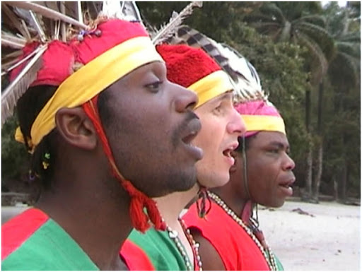

Современная Южная Африка - она же ЮАР - дом для десятков различных культур, когда-то объединённых общей колониальной администрацией. Только официальных языков в стране 11, а различных народностей и того больше. Большая часть населения - коренные народы страны, когда-то захваченные европейскими колонизаторами. Однако около 8% населения составляют потомки белых колонистов. Большая их часть - так называемые африканеры, примечательные тем, что это фактически единственная этническая группа на территории Чёрной Африки, сформировавшаяся из белого населения.

Данная страница содержит ссылки на различные аспекты жизни данного народа. Они представлены ниже: